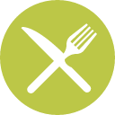

- Commit
The first step is always the hardest. - Selfie
Share your commitment on social media holding a sign like this! - Locate and RSVP
Find a SE7EN FEAST near you and reserve a seat at the table here. - 
- Fast
Abstain from eating and drinking while the sun is up on 6/7/16. - Donate
Give what you would have spent on food for the day to The World Food Programme or a local food bank. - Feast
Attend the SE7EN FEAST in your area and meet Muslims in your community!